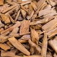
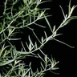

Oil Grimoire
 Oakmoss Absolute
Oakmoss Absolute

Cascarilla Bark Essential Oil
Tarragon Essential OilBotanical Information
Evernia furfuracea from the Parmeliaceae family, solvent extracted from lichen (tree moss). Originates from Morocco. Base note with average absorption. Dark green, thick absolute from small gray-green lichen that attaches to oak and rough-barked trees.
Working with Oakmoss: Due to viscous nature, place unopened bottle in cup of warm water for few minutes prior to use. Allows bottle to open more easily and makes absolute less viscous. Drops difficult to count due to thickness. Add oakmoss last and shake well to incorporate.
Scent Profile
Warm, woody, leather, and violet with a slightly spicy character. Soothing and grounding.
Substitution
Oakmoss can be imitated with the Oakmoss Bouquet recipe combining Vetivert Oil and Cinnamon Oil. This substitute works well in money-drawing and grounding formulas when genuine oakmoss is unavailable or its viscous nature proves difficult to work with.
Magickal Correspondences
Deity: Pazuzu (apotropaic god of exorcism)
Crystal: Zoisite for chasing away lethargy
Herbal Lore
Lichen that attaches to oak and other rough-barked trees. Moss-like fungi soaks up oils well, used as fixative in potpourri and perfume. Staying power translates to magick—folk practitioners stuff poppets with oakmoss to make magick have longer-lasting effect. Place drop of absolute on cotton ball and add to stuffing when making poppet.
Forms and Extraction
A range of products is produced from  Oak Moss (Evernia prunastri). The lichen is often soaked in lukewarm water before processing.
Oak Moss (Evernia prunastri). The lichen is often soaked in lukewarm water before processing.
- Concrete: solvent extracted from the raw lichen; a very dark, semi-solid mass with a heavy, rich-earthy, extremely tenacious odour. Used primarily in soaps.
- Absolute (this entry): solvent extracted from the lichen; a dark green or brown, very viscous liquid with an extremely tenacious, earthy-mossy odour and a leather-like undertone. The most versatile and important of the products, used in all perfume types — oriental, moss, fougère, new-mown hay, floral, colognes, aftershaves, and more.
- Absolute oil: vacuum distilled from the concrete; a pale yellow or olive viscous liquid with a dry-earthy, bark-like odour, true to nature. Used in high-class perfumes.
- Resins and resinoids: alcohol extracted from the raw material; very dark semi-solid or solid masses with a heavy, rich-earthy odour and poor solubility. Used in soaps, hair preparations, industrial perfumes, and lower-cost products.
Principal constituents are crystalline lichen acids, mainly evernic acid and d-usnic acid, with some atranorine and chloratronorine.
Magickal Uses
Blend with meditative essential oils (neroli, ylang-ylang), diffuse synergy while searching inner self for answers. If diffusing outside synergy, proceed with caution—viscous nature may gum up small electrical diffusers. Older style oil burner working on candle may be more beneficial with fire safety protocols. Method also works for contacting other planes and divination of many kinds.
Potent tool for hex breaking and exorcism. Add dried oakmoss to poppets for direct work. Absolute blends well to make exorcism oil that packs punch.
Immensely grounding and centering. This fungi roots people in here and now, aids in contacting spirits of forest and individual trees. For grounding, diffuse drop in water with oil burner, or create poppet to represent yourself. Once named, anoint feet of doll with diluted oakmoss oil. Keep doll safe, give it date when it becomes inactive and no longer extension of you.
Yields long-term results for business, manifesting, and prosperity work—specifically money and good luck. As fixative, not resource quickly burned out. Slow and steady is motto. Add oakmoss to prosperity oils for lasting effect.
Adulteration Note
Oakmoss absolute is extensively compounded or "bouquetted" — that is, cut or adulterated with other lichen species or synthetic perfume materials. When sourcing for sensitive magickal or therapeutic work, verify the supplier and look for Evernia prunastri specifically; E. furfuracea and Usnea barbata are commonly substituted, particularly in the USA where both are sold as "oakmoss."